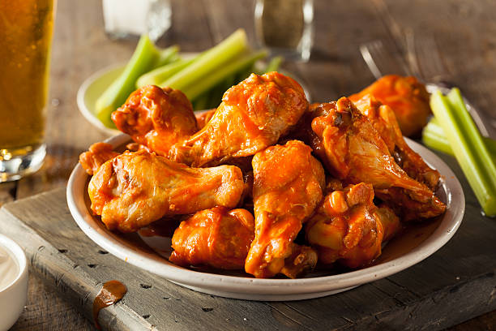

Home
Buffalo Wings

Description
Buffalo wings are a classic American appetizer consisting of
deep-fried, unbreaded chicken wings, typically drumettes and
flats, coated in a spicy, buttery sauce
Ingredients
- 4lb chicken wings
- 5 teaspoons baking powder
- Kosher salt
- 4 tbsp unsalted butter
- 1/2 cup Frank's Red Hot Sauce
- 1 tsp brown sugar
Steps
- Pre-heat oven to 250 degrees
- Toss wings in a large bowl. Sprinkle over the baking powder
and salt. Use hands to toss well until coated evenly
- Bake for 30 minutes on the lower shelf
- Move the tray to the upper shelf and turn the oven up to
425 degrees. Bake for another 40 minutes
- Combine Franks hot sauce, butter, brown sugar, and salt.
Mix well
- Transfer the wings into a big bowl. Pour the sauce over
the wings and toss well
- Finally, serve the wings with ranch